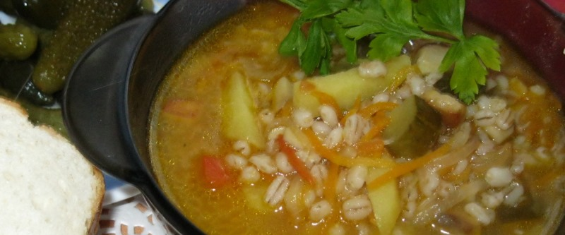

Рассольник

250 гр. перловки замочить на ночь. 0,5 кг. говядины вымыть, залить 3 л. воды и поставить вариться, добавить перловку. Когда мясо сварится, вытащить и отделить от костей. Затем говядина измельчается, режется на тонкие кусочки и бросается в кастрюлю. Вслед за мясом в кастрюлю отправляется порезанные 3 картофелины. 1 морковь и 1 луковицу измельчить, пассировать в подсолнечном масле. 4 соленых огурца порезать на кусочки, добавить к овощам. Овощную смесь отправить в кастрюлю. Суп посолить и поперчить. Периодически следует помешивать. После варки добавить зелень. Подавать со сметаной.